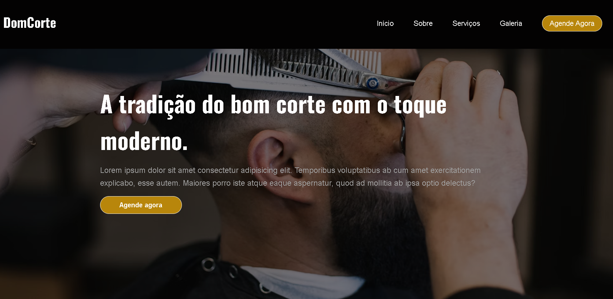

Sou o Lucas.
Desenvolvedor Front-end e UX/UI Designer
Design com propósito, código com precisão.
Sobre mim.
Sou um desenvolvedor front-end e designer UI/UX movido pela ideia de que experiências digitais podem ser funcionais, bonitas e com propósito. Trabalho conectando código e design de forma estratégica, com atenção aos detalhes, boas práticas e foco no usuário.
Habilidades
Portfólio
Da ideia ao código: projetos que unem estética e funcionalidade.
-

Lucas Dev - Portfólio
Um site pessoal desenvolvido do zero para apresentar meu trabalho como front-end e designer UI/UX. Foco em experiência visual, responsividade e microinterações com propósito..
-

Blog Sphere
Um layout de blog moderno com foco em responsividade e estrutura clara de conteúdo. Criado com HTML, CSS e JavaScript para explorar boas práticas de design e navegação.
-

Dom corte - Landing page
Landing page desenvolvida para uma barbearia fictícia com foco visual e comercial. Design responsivo e moderno, pensado para destacar serviços e atrair clientes.
Serviços
Desenvolvimento Front-end
Sites rápidos, Responsivos e com código limpo. HTML,CSS e acessibilidade.
Design UX/UI
experiências intuitivas com foco no usuário, wireframes, protótipos e interfaces.

UI Design no figma
Contato
Vamos trabalhar juntos?